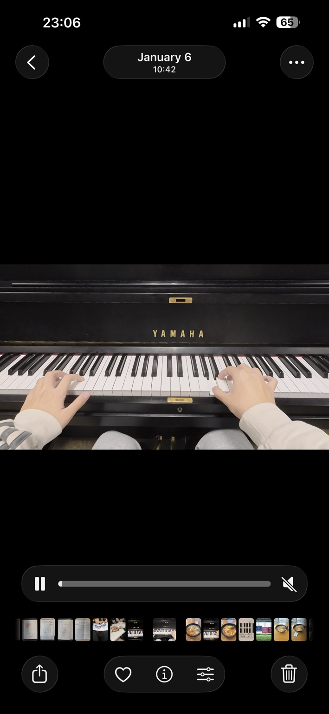
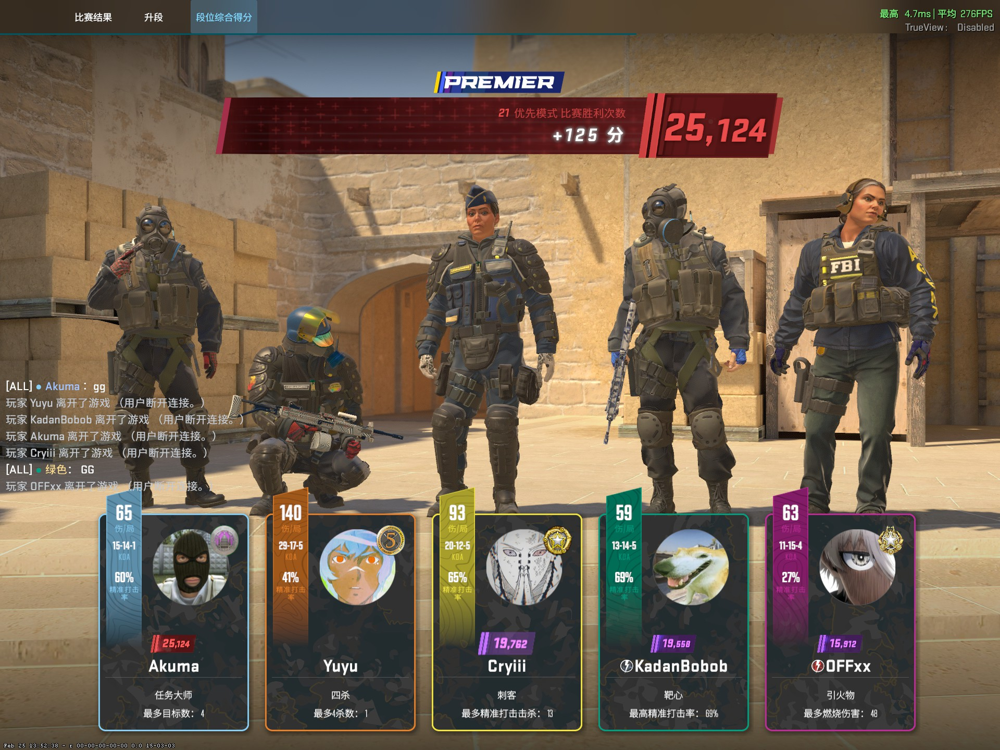
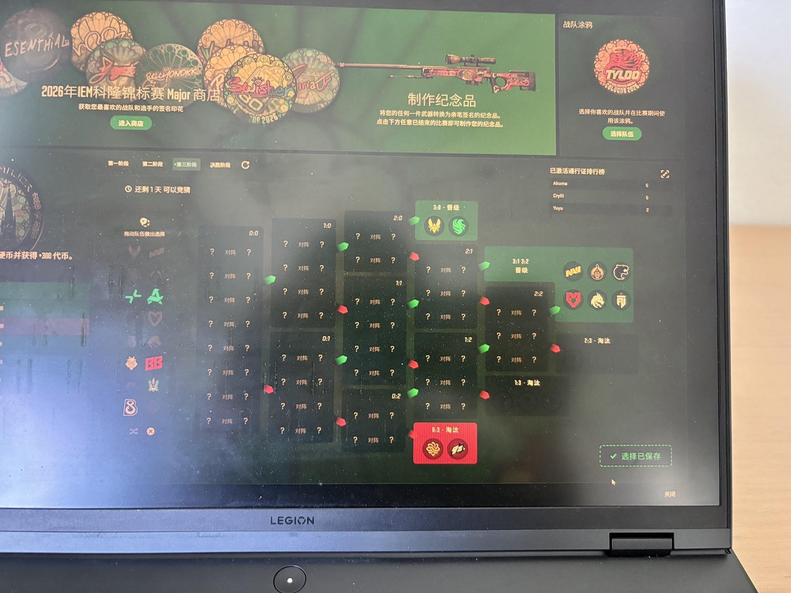
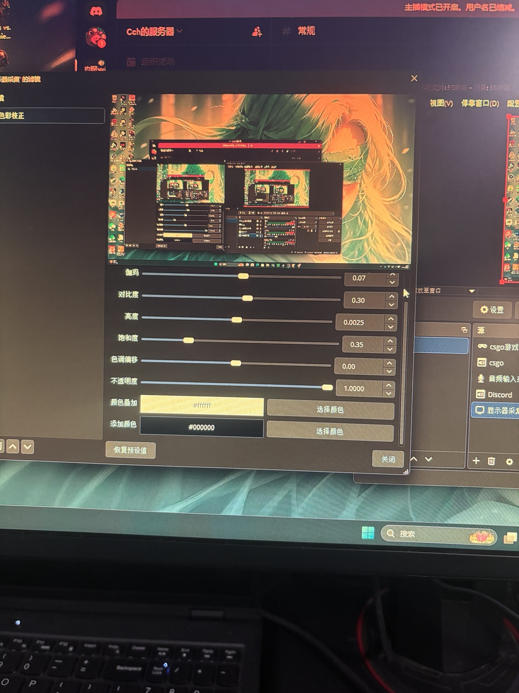

My name is Chris Hu, and I am a student at the University of California, Riverside, majoring in Economics / Administrative Studies. I am interested in finance, investment, business operations, and how people make decisions. Through my studies, I am developing the analytical and communication skills needed to understand economic problems and contribute to future business projects. I enjoy connecting classroom concepts to everyday experiences, especially when they help explain consumer behavior, company strategies, or the choices people make with limited resources.
My academic background includes microeconomics, macroeconomics, statistics, and calculus. These subjects have helped me approach questions from different perspectives. Economics encourages me to consider incentives and tradeoffs, while statistics teaches me to evaluate evidence and recognize uncertainty. Calculus challenges me to work carefully through problems and understand the reasoning behind each step. When studying, I review examples after class, compare different methods, and create formula cards. This process helps me build understanding rather than simply memorize answers.
One of my most meaningful academic experiences was a group business project in BUS 010. My teammates and I developed a proposal for a campus application that combined navigation, registration support, delivery services, and a secondhand marketplace. I helped examine operating costs, subscription options, and financial projections. After receiving feedback that our initial profit estimates were too optimistic, we revised our assumptions and financial statements. The project showed me why business planning requires realistic expectations, careful research, and a willingness to improve an idea.
Working with a team also strengthened my sense of responsibility. I helped coordinate meetings, communicate about availability, and complete unfinished work when needed. On the morning of our presentation, I volunteered to cover an additional introduction when a teammate was unexpectedly absent. Preparing quickly and presenting unfamiliar material taught me to remain calm and support the group. I learned that leadership can mean stepping forward at an important moment while also helping others throughout the process.
Outside the classroom, I enjoy video editing and playing the piano. I taught myself Adobe Premiere Pro through online tutorials and have created approximately thirty gaming highlight videos. Editing allows me to experiment with pacing, music, lighting, and visual effects to turn individual moments into a story. I also began teaching myself piano in January 2025. Learning challenging passages requires patience, especially when coordinating both hands. Breaking a piece into smaller sections has taught me that consistent practice can make difficult goals more manageable.
Having lived in both China and the United States, I value opportunities to learn from different perspectives. Adapting to another language and educational environment has encouraged me to become more independent and open to feedback. I continue working to improve my writing, speaking, and ability to explain ideas clearly. Whether I am solving a mathematics problem, revising a project, or practicing music, I try to stay curious and persistent. My goal is to combine economic knowledge, practical business skills, and creativity in work that helps people make informed decisions and solve problems. I look forward to developing these abilities through future learning.
• Collaborated with classmates on a campus application business proposal.
• Researched server costs, subscription pricing, advertising revenue, and marketplace commissions.
• Revised financial projections in response to teaching assistant feedback.
• Coordinated meetings and helped present the final proposal.
• Taught myself Adobe Premiere Pro through online tutorials and independent practice.
• Created approximately thirty gaming highlight videos.
• Combined gameplay, music, pacing, and visual effects to tell a story.
• Adjusted brightness and color and refined transitions before sharing videos.
• Learned piano independently through regular practice.
• Practiced each hand separately before combining challenging passages.
• Learned The Truth That You Leave and the Time Travel Theme from Secret.
• Recorded performances and shared music with friends.
Our campus application proposal began with a practical question: what services would make student life easier? The idea brought together a campus map, help with class registration, delivery options, and a marketplace for used items. These features addressed different needs, but they also raised questions about cost and priorities. A useful feature still needs a realistic plan for maintenance and funding. Working on the proposal helped me connect an idea that sounded convenient with the business decisions necessary to support it.
My contribution included examining possible operating expenses and revenue sources. We considered servers, cloud services, databases, subscriptions, advertising, and commissions from secondhand transactions. The proposed subscription options were thirteen dollars and nineteen dollars per month. These were planning assumptions for a class project rather than prices for an operating company. Thinking through them encouraged me to ask what customers would receive, whether they would choose to pay, and how much revenue could reasonably support the services we proposed.
Feedback from our teaching assistant was especially valuable because it challenged our early expectations. Our original profit estimates were too high, so we revised the financial statements to show losses during the first two years followed by a gradual path toward profitability. That revision changed how I understood the assignment. A convincing business plan does not simply present attractive numbers. It explains its assumptions, acknowledges expenses, and shows how its conclusions follow from the evidence available to the team.
The teamwork behind the proposal mattered as much as the calculations. Coordinating availability required communication, and completing shared work required flexibility. I helped organize meetings and took responsibility for unfinished financial material when needed. During the final presentation, I also covered an additional introduction after a teammate was unexpectedly absent. Those experiences taught me to prepare carefully while remaining ready to adapt. In future group projects, I want to continue improving how I communicate progress and help a team meet its responsibilities.
My video editing projects combine an interest in gaming with an interest in storytelling. A recording contains many moments, but an edited video requires choosing which moments deserve attention and how they should fit together. I have created approximately thirty highlight videos, usually spending about two and a half to three hours on each one. That time includes selecting clips, arranging them, testing music, adjusting visual effects, and reviewing the result. The finished sequence reflects many small decisions rather than one automatic step.
Pacing is one of the parts I enjoy exploring most. A short opening clip can introduce the energy of a video, while later clips can build toward a stronger moment. Music affects how those choices feel. I have experimented with energetic tracks and softer music, depending on the material. Changes in speed, brightness, and effects can emphasize an action, but they should still support the sequence. My aim is to help viewers follow the moment and understand why I selected it.
One memorable edit centered on a one versus five clutch. I matched the rising intensity of the action with the music, then slowed the ending and included my teammates' voices. The voices gave the result a social context: the clip showed both an individual moment and a shared reaction. I wanted the video to communicate persistence under pressure. Making that edit helped me recognize how sound, timing, and selection can turn recorded events into a story with a particular emotional direction.
Learning through tutorials has also made me more comfortable with independent problem solving. When I encounter an unfamiliar editing feature, I can study an example, try the technique, and decide whether it suits my project. Repeating that process builds practical knowledge over time. I still consider myself a learner, and I want to improve the clarity of my edits as well as their visual quality. This portfolio includes gaming and recording images as context for those interests; they are not examples of paid client work.
I began learning piano in January 2025 without previous playing experience. My first steps involved learning small sections and becoming comfortable with the relationship between what I read and what my hands needed to do. The Truth That You Leave was an early piece I worked on using numbered notation. Later, the Time Travel Theme from Secret presented a different challenge because its opening required coordinating two melodic parts. The difficulty made progress slow, but it also gave me a clear reason to practice consistently.
For difficult passages, I practiced the right hand and left hand separately before bringing them together. Dividing the task made it easier to recognize where I was struggling. A complete playthrough of the Time Travel Theme took about a month of work, followed by roughly two more weeks to make the performance smoother. Recording and sharing performances gave me a way to hear the result outside the immediate practice session. The piano image below comes from one of my personal recordings.
Across economics, editing, and music, I see a similar pattern in how I learn. Large tasks become more manageable when I identify smaller problems, work through them carefully, and return to the complete result. Feedback can reveal something I missed, whether it concerns a financial assumption, the timing of a clip, or the coordination of a passage. I want to keep developing this habit throughout my undergraduate education. My expected graduation date is June 2029, and my current focus is building a foundation for future study and work.
Coursework includes microeconomics, macroeconomics, statistics, calculus, business, writing, and introductory computing.

A frame from a personal piano practice recording.

A Counter-Strike 2 Premier match result showing a rating of 25,124.

Following professional Counter-Strike and exploring tournament predictions.

Exploring screen capture and visual settings for gaming content.